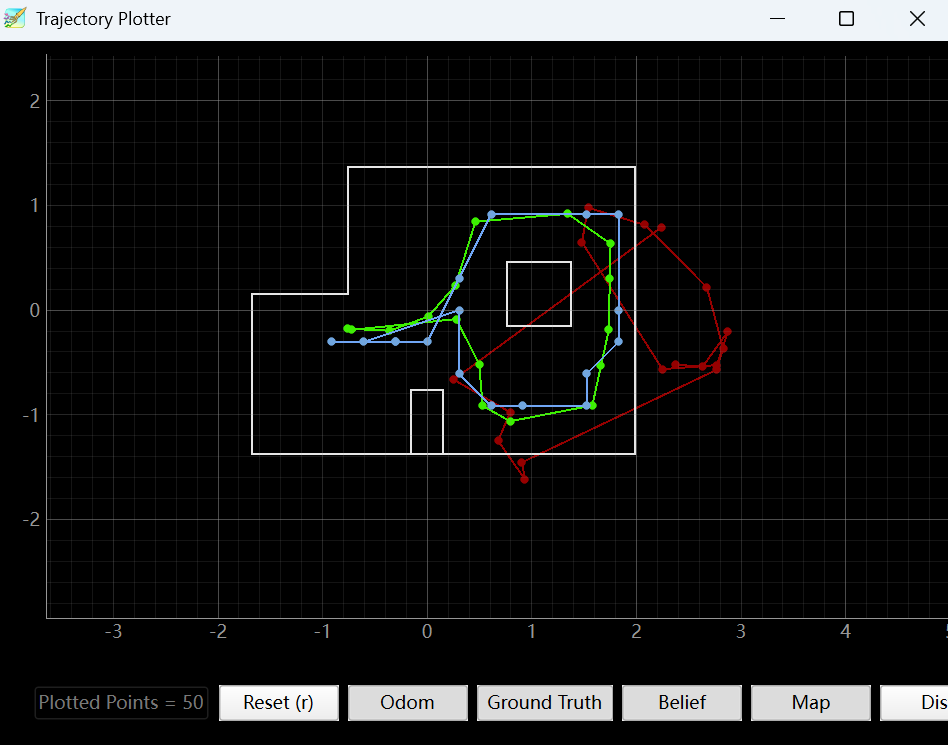

Lab 10: Grid Localization using Bayes Filter
Goals
-
This lab aimed to implement and evaluate a Bayes filter for grid-based robot localization in simulation.
The goal was to estimate the robot’s pose (x, y, θ) more accurately than odometry alone by combining motion updates with range-based observation updates.
Mathematical Principles
Bayes Filter
The Bayes filter updates the robot belief in two stages. First, the previous belief is propagated using the motion model and odometry input. Then, the predicted belief is corrected using sensor observations.
Algorithm Bayes_Filter (bel(xt-1), ut, zt)
for all xt do
̄bel(xt) = Σxt-1 p(xt | ut, xt-1) bel(xt-1)
bel(xt) = η p(zt | xt) ̄bel(xt)
end for
- Prediction Step: propagate the belief according to robot motion and odometry.
- Update Step: correct the predicted belief using range-based sensor observations.
Odometry Motion Model
Each robot motion is decomposed into three components: (rot1, trans, rot2), corresponding to the initial rotation, translation, and final rotation.
u = (rot1, trans, rot2)
trans = √((xt - xt-1)2 + (yt - yt-1)2)
rot1 = atan2(yt - yt-1, xt - xt-1) - θt-1
rot2 = θt - θt-1 - rot1
Since odometry is noisy, the transition probability is modeled with Gaussian distributions:
p(xt | ut, xt-1) = p(rot1) · p(trans) · p(rot2)
Sensor Model
For each candidate state, the expected observation is compared with the measured observation. The measurement noise is modeled by a Gaussian distribution.
p(zt | xt) = Πk=118 p(ztk | xt)
Therefore, the update step favors the state whose expected sensor readings best match the actual 18 range measurements.
Normalization and Angle Handling
After each prediction and update step, the belief grid is normalized so that the total probability remains equal to one. In addition, angle differences are always normalized to the principal range to avoid misleading orientation errors caused by periodicity.
Algorithm Implementation
Step 1: Compute Control Input
The first step is to extract the odometry control input from two consecutive poses. Following the odometry motion model, each motion is decomposed into three terms: rot1, trans, and rot2. This function converts the current and previous pose into the control tuple used later in the prediction step.
def compute_control(cur_pose, prev_pose):
x_prev, y_prev, yaw_prev = prev_pose
x_cur, y_cur, yaw_cur = cur_pose
dx = x_cur - x_prev
dy = y_cur - y_prev
delta_trans = math.hypot(dx, dy)
heading = math.degrees(math.atan2(dy, dx))
delta_rot_1 = mapper.normalize_angle(heading - yaw_prev)
delta_rot_2 = mapper.normalize_angle(yaw_cur - yaw_prev - delta_rot_1)
return delta_rot_1, delta_trans, delta_rot_2
Step 2: Implement the Odometry Motion Model
After obtaining the control tuple, the motion model is used to evaluate the probability of transitioning from a previous state to a current state. The discrepancy between the actual odometry control and the control implied by a candidate transition is modeled with Gaussian distributions. The final motion likelihood is the product of the rotation and translation probabilities.
def odom_motion_model(cur_pose, prev_pose, u):
rot1_u, trans_u, rot2_u = u
rot1_hat, trans_hat, rot2_hat = compute_control(cur_pose, prev_pose)
rot1_err = mapper.normalize_angle(rot1_hat - rot1_u)
trans_err = trans_hat - trans_u
rot2_err = mapper.normalize_angle(rot2_hat - rot2_u)
prob_rot1 = loc.gaussian(rot1_err, 0, loc.odom_rot_sigma)
prob_trans = loc.gaussian(trans_err, 0, loc.odom_trans_sigma)
prob_rot2 = loc.gaussian(rot2_err, 0, loc.odom_rot_sigma)
prob = prob_rot1 * prob_trans * prob_rot2
return prob
Step 3: Prediction Step
In the prediction step, the previous belief distribution is propagated to produce the prior belief bel̄. For each possible previous state, the motion model is evaluated against every candidate current state, and the resulting probability mass is accumulated into the new belief grid. To reduce runtime, very low-probability states are skipped.
def prediction_step(cur_odom, prev_odom):
u = compute_control(cur_odom, prev_odom)
loc.bel_bar = np.zeros_like(loc.bel)
nx, ny, na = loc.bel.shape
for prev_ix in range(nx):
for prev_iy in range(ny):
for prev_it in range(na):
prev_bel = loc.bel[prev_ix, prev_iy, prev_it]
if prev_bel < 1e-4:
continue
prev_pose = mapper.from_map(prev_ix, prev_iy, prev_it)
for cur_ix in range(nx):
for cur_iy in range(ny):
for cur_it in range(na):
cur_pose = mapper.from_map(cur_ix, cur_iy, cur_it)
p = odom_motion_model(cur_pose, prev_pose, u)
loc.bel_bar[cur_ix, cur_iy, cur_it] += p * prev_bel
s = np.sum(loc.bel_bar)
if s > 0:
loc.bel_bar = loc.bel_bar / s
Step 4: Sensor Model
The sensor model compares the measured observation with the expected observation of a candidate state. Since the robot collects 18 range measurements during one observation loop, the function returns 18 individual likelihood values. Both arrays are flattened first to avoid shape mismatch between (18, 1) and (18,).
def sensor_model(obs):
z = np.array(loc.obs_range_data).flatten()
obs = np.array(obs).flatten()
prob_array = loc.gaussian(z, obs, loc.sensor_sigma)
return prob_array
Step 5: Update Step
In the update step, the prior belief is corrected using sensor observations. For each grid cell, the expected observation is retrieved from the map, passed through the sensor model, and combined into a single likelihood by multiplying the 18 individual probabilities. This likelihood is then multiplied by the prior belief and normalized to produce the posterior belief.
def update_step():
new_bel = np.zeros_like(loc.bel)
nx, ny, na = loc.bel.shape
for ix in range(nx):
for iy in range(ny):
for it in range(na):
obs = mapper.get_views(ix, iy, it)
prob_array = sensor_model(obs)
likelihood = np.prod(prob_array)
new_bel[ix, iy, it] = likelihood * loc.bel_bar[ix, iy, it]
s = np.sum(new_bel)
if s > 0:
loc.bel = new_bel / s
else:
loc.bel = new_bel
Step 6: Error Evaluation and Angle Normalization
During debugging, the prediction and update statistics were printed after every iteration. To make the orientation error physically meaningful, the yaw difference was normalized instead of directly subtracted. This avoided misleading large values such as 350° when the true angular error was only 10°.
pos_error = np.array([
current_gt[0] - current_belief[0],
current_gt[1] - current_belief[1],
self.mapper.normalize_angle(current_gt[2] - current_belief[2])
])
Step 7: Running the Complete Bayes Filter
After implementing all the above functions, the complete localization loop was executed over the full trajectory. At each time step, the robot first moved according to the predefined trajectory, then the prediction step propagated the belief using odometry, and finally the update step corrected the estimate using sensor observations.
traj = Trajectory(loc)
for t in range(0, traj.total_time_steps):
prev_odom, current_odom, prev_gt, current_gt = traj.execute_time_step(t)
prediction_step(current_odom, prev_odom)
loc.print_prediction_stats(plot_data=True)
loc.get_observation_data()
update_step()
loc.print_update_stats(plot_data=True)
Simulation Results
The completed Bayes filter was evaluated on the predefined simulation trajectory. During the experiment, the odometry trajectory, ground-truth trajectory, and belief-based localization trajectory were visualized simultaneously in the trajectory plotter. The results show that odometry alone accumulated noticeable drift over time, while the Bayes filter was able to correct this drift by incorporating range-based observations. In most iterations, the update step reduced both the position and orientation error compared with the prediction step, indicating that the observation model successfully refined the prior belief.

As shown in Figure 1, the odometry-only trajectory deviated significantly from the true path due to accumulated motion error, while the belief-based estimate remained much closer to the ground truth. This confirms that the prediction step alone was insufficient for accurate localization, but the update step effectively corrected the estimated pose using sensor measurements. In addition, the final orientation error remained within a reasonable range after angle normalization, which further demonstrates that the localization framework worked reliably in simulation.
Appendix
1. An announcement of AI usage
I used AI tools to support parts of this lab, mainly for webpage/HTML formatting, minor code edits and debugging, and polishing the written explanations for clarity and conciseness. Throughout the assignment, I verified the suggestions against the lab requirements, tested changes on my own setup, and made final design and implementation decisions independently based on my own understanding.